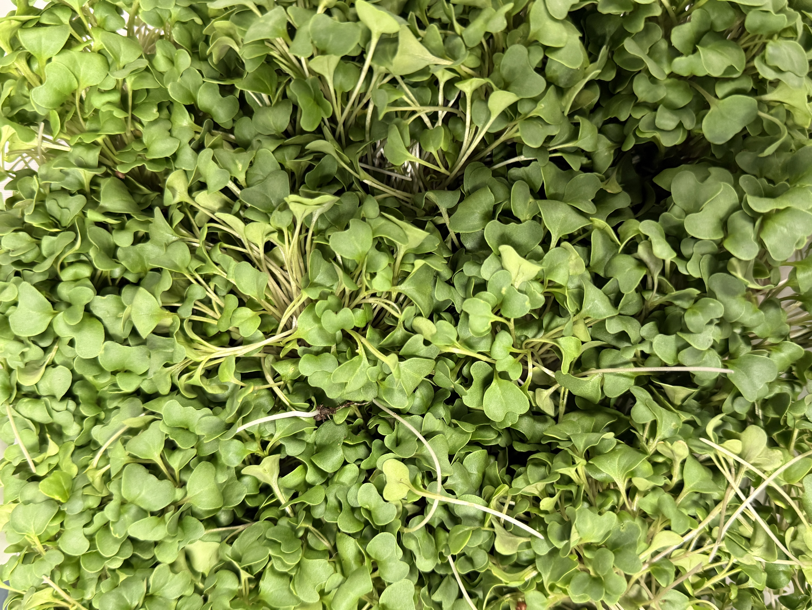
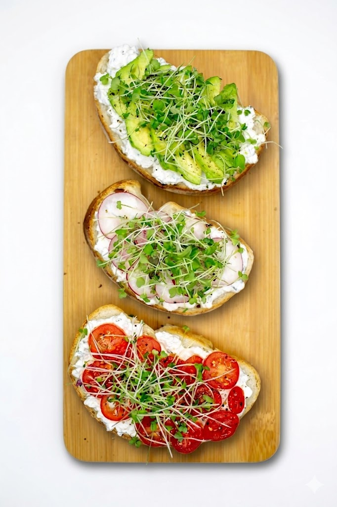
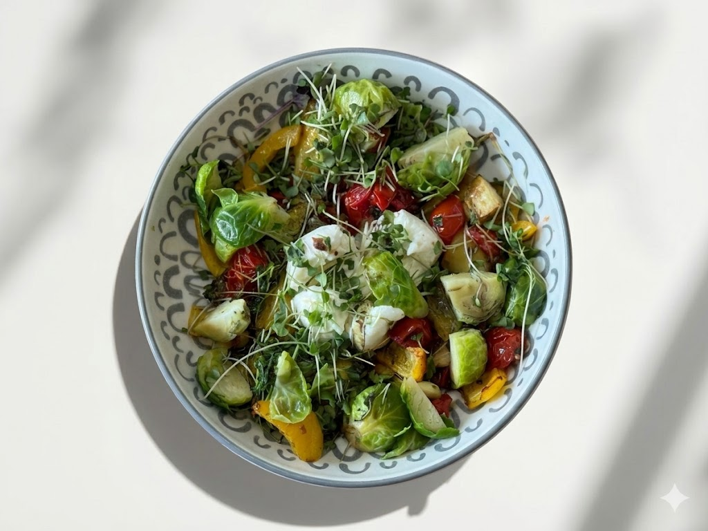

The Power of Microgreens
Tiny but mighty — microgreens contain up to 40x more vitamins, minerals, and antioxidants than mature plants. Just a small handful adds incredible nutrition to any meal.
- 🌱 Up to 40x more nutrients than mature greens
- ⚡ Ready to eat in seconds — no cooking needed
- 🫀 Supports heart health, immunity, and energy
More Ways to Enjoy Your Greens

Microgreen Grilled Cheese
A golden, gooey grilled cheese elevated with a layer of fresh microgreens tucked inside. The greens wilt just slightly from the warmth, adding color, nutrition, and a delicate fresh note to every bite.
Show Recipe
Method: Butter both sides of bread. Layer cheese on one slice. Cook in a skillet over medium-low heat until golden brown and cheese is melted. Open the sandwich, tuck in fresh microgreens, close, and serve immediately.

Fresh Microgreen Salad
A simple, vibrant salad that lets our fresh microgreens shine. Dressed lightly with lemon and olive oil so nothing overpowers the delicate, just-harvested flavors of our greens.
Show Recipe
Method: Arrange microgreens on a platter or in a wide bowl. Scatter tomatoes, cucumber, and radish on top. Drizzle generously with olive oil and squeeze fresh lemon over everything. Season with flaky salt and cracked pepper. Serve immediately.

Microgreen Bowl
A nourishing, build-your-own bowl piled with whole grains, roasted vegetables, and a generous crown of fresh microgreens. Versatile, colorful, and endlessly customizable.
Show Recipe
Method: Cook grains. Roast chickpeas at 400°F with olive oil and spices until crispy, about 25 min. Assemble bowls with grains as the base, then microgreens, chickpeas, avocado, and cucumber. Drizzle with tahini dressing and a squeeze of lemon.

Open Face Microgreen Toast
A beautiful open-face toast topped with creamy ricotta, a drizzle of honey, and a generous pile of fresh microgreens. Effortlessly elegant for breakfast or a quick lunch.
Show Recipe
Method: Toast bread until golden and crisp. Spread generously with ricotta or goat cheese. Top with a mound of fresh microgreens. Drizzle with honey and olive oil, add a pinch of lemon zest and flaky salt. Serve open-face immediately.

Microgreen Sandwich
A simple, satisfying sandwich made extraordinary by a generous layer of fresh microgreens. Use your favorite fillings — the greens add crunch, color, and nutrition to absolutely anything.
Show Recipe
Method: Toast bread if desired. Spread condiments on both slices. Layer your protein and tomato. Add a generous handful of fresh microgreens. Season lightly, close the sandwich, and enjoy immediately for best crunch.

Microgreen Scrambled Eggs
Soft, creamy scrambled eggs finished with a fresh handful of microgreens right before serving. The eggs stay perfectly tender while the greens add a beautiful, fresh contrast in every bite.
Show Recipe
Method: Whisk eggs with cream, salt, and pepper. Melt butter in a non-stick pan over low heat. Add eggs and stir slowly and continuously until just barely set and still glossy. Remove from heat immediately. Top with fresh microgreens and chives. Serve right away.
Pro Tip: When to Add Your Microgreens
Microgreens are best added raw and at the very end of cooking — think of them as a finishing ingredient like fresh herbs. Heat destroys their delicate nutrients and wilts their beautiful texture. The exception is pea shoots, which can handle a quick 60-second sauté over high heat and are delicious that way. Sunflower shoots hold up even a little longer. When in doubt, add them after the heat is off.